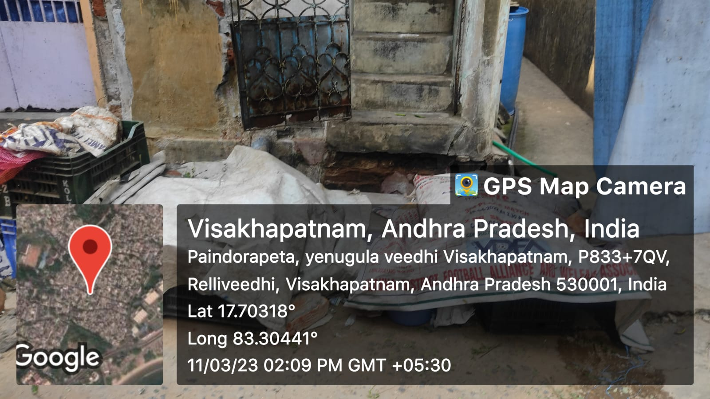

Paindorapeta

yenugula veedhi in Paindorapeta is a slum that comes with in gvmc.
- Substanded Housing:Slum dwellers may live in substandard housing conditions, with limited access to proper ventilation, lighting, and insulation. This can impact their comfort and health, particularly in extreme weather conditions.
- No proper drainage system
- Inadequate healthcare: Medical facilities in Yenugula veedhi in paindorapeta are often limited and of poor quality, which can limit access to healthcare for residents.
- Poor housing conditions: Slum dwellers may live in substandard housing conditions, with limited access to proper ventilation, lighting, and insulation. This can impact their comfort and health, particularly in extreme weather conditions.